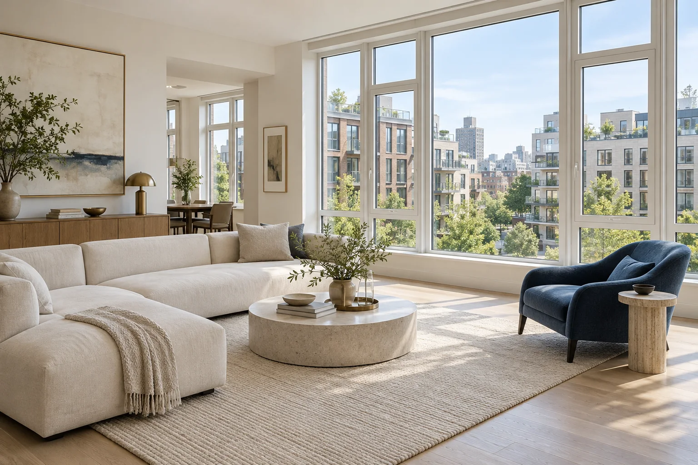

ФОРМА СЛЕДУЕТ ЗА ВАШЕЙ ЖИЗНЬЮ
СВЕТ.
ФОРМА.
ФУНКЦИЯ.

Архитектурная визуализацияОкна, фасады и раздвижные системы. Четкая геометрия для пространства, в котором удобно жить.
Больше возможностей для вашего интерьера.
Характеристики подбирают под ваш объект.
Цвет, пропорции и геометрия в одном решении.
04 / ПРОСВЕТ
01КАТАЛОГ РЕШЕНИЙ
Система
ваших возможностей
От отдельного окна до стеклянного фасада. Выберите задачу — изучите особенности решения.
Конфигурация зависит от особенностей вашего объекта.
04НАЧНИТЕ С ВАШЕЙ ЗАДАЧИ
Какое решение
подойдет вам?
Выберите объект и главный приоритет. Получите ориентир для дальнейшего обсуждения со специалистом.
02ПОДХОД К ПРОЕКТУ
Ничего случайного.
Все взаимосвязано.
Остекление — часть жизни дома. Выбор начинается с понимания пространства, а технические решения поддерживают вашу идею.
От вашего сценария
Как вы используете помещение, что хотите видеть за окном и какой комфорт для вас важен.
К подходящей системе
Материал профиля, стеклопакет и открывание подбираются вместе с учетом условий объекта.
Через внимание к деталям
Примыкания, вентиляция и монтаж обсуждаются до окончательного выбора конструкции.
Хорошая конструкция — это согласованные между собой детали.
ПРОСВЕТ / ФИЛОСОФИЯ ПРОСТРАНСТВА03АРХИТЕКТУРНОЕ ВДОХНОВЕНИЕ
Увидеть возможности.
Представить свое.
Архитектурные визуализации для поиска идеи. Эти изображения не являются выполненными работами компании.
Свет как часть архитектуры
Идея для вашего будущего пространства
Открытый взгляд на привычное
Прозрачная граница между домом и миром
Жизнь вокруг любимого вида
Детали, которые задают настроение
05ПОЛЕЗНО ЗНАТЬ
Вопросы, с которых
стоит начать
Несколько ориентиров, которые помогают сделать осознанный выбор.
01Чем теплое остекление отличается от холодного?
Теплые системы используют профиль с теплоизоляцией и стеклопакеты, чтобы снизить потери тепла. Холодные в первую очередь защищают от ветра и осадков. Для круглогодичного использования помещения также нужны утепление стен, пола, кровли и подходящее отопление.
02Что влияет на стоимость остекления?
Размеры и количество конструкций, материал профиля, состав стеклопакета, тип открывания, цвет, сложность монтажа и дополнительные работы. Точный расчет возможен после уточнения параметров и условий объекта. Неподтвержденные цены на сайте не публикуются.
03Можно ли сделать панорамное остекление в готовом доме?
Возможность зависит от конструкции здания и размеров существующих проемов. Изменение несущих элементов требует обследования и проектного решения. Подбирать остекление стоит после проверки технических ограничений и необходимых согласований.
04Что подготовить перед обсуждением проекта?
Полезны фотографии объекта, примерные размеры проемов, планы или чертежи, пожелания к открыванию и понимание того, как будет использоваться помещение. На этой странице можно составить и скачать краткое задание для дальнейшего обсуждения со специалистом.
ОТ ВАШЕЙ ИДЕИ — К ВЫБОРУ РЕШЕНИЯ
Сформулируем
вашу задачу
Опишите объект и пожелания.
Подготовьте задание для обсуждения со специалистом.